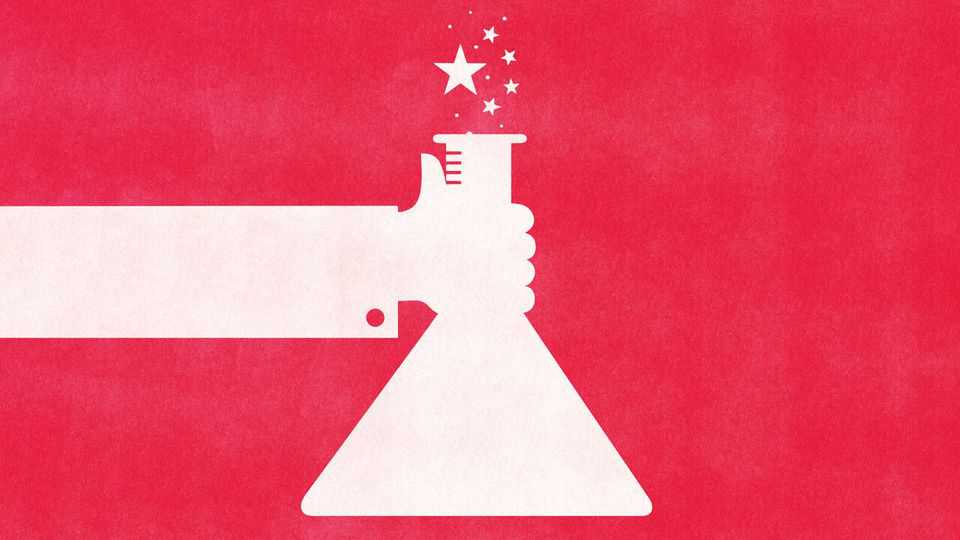

Xi Jinping gives China’s crack scientists new jobs inside government
Tech rivalry is reshaping the ruling elite
June 4th 2026

IT IS OFTEN said that China is ruled by engineers. In fact, it is ruled by people with engineering degrees. President Xi Jinping, who studied chemical engineering, has probably not looked at a flow chart since his university days. Upon leaving school he went to work in the government for one of his father’s old pals. Like Mr Xi, most of China’s top leaders have spent their adult lives climbing the ranks of the Communist Party. Now, as China races to beat America to new technologies, true boffins are being given more power.
Some of China’s most prominent chemists, physicists and computer scientists are being drawn into the party’s upper ranks. Recent research by Li Cheng and Zhao Xiuye of the University of Hong Kong shows that more “academicians”, an elite group of career scientists elected by China’s academic bodies, are joining the party leadership and government. The number of such scientists with seats on the party’s decision-making Central Committee has doubled in the past decade to 29 of the roughly 350 members. They are said to have been elevated to help set policies, and to guide capital and talent towards China’s innovation machine.
Some of the experts remain in academia as presidents of universities and leaders of national laboratories. Others have hung up their lab coats for government jobs. Huang Ru, a leading specialist in microelectronics, spent most of her career as a professor at Peking University. This year Ms Huang was made a vice-chair of the National Development and Reform Commission (NDRC), the state planning agency, to oversee efforts to build home-grown semiconductors. She joins Xiangli Bin. Though not formally an “academician”, he helped build Beidou (China’s answer to America’s GPS navigation system). Mr Xiangli was appointed vice-chair in 2024 and helps implement innovation policy.
The drive for technological self-reliance is a whole-of-government effort. Huai Jinpeng, the education minister, for example, is an expert in networked computing systems of the sort needed to link up data centres. His deputy minister is a physicist who was most recently in charge of Zhejiang University, known for turning out talented engineers for China’s artificial-intelligence labs. Both have seats on the Central Committee. It is likely that some of the academicians are members of an opaque party body called the Central Science and Technology Commission, created in 2023 to bring China’s innovation drive directly under party control.
So far, Messrs Li and Zhao noted in a report for ThinkChina, a news site, that no recognised academician has made it onto the party’s 24-member Politburo. Yet that body, too, has grown brainier: five of its members selected in 2022 could boast of serious scientific careers.
The personnel changes reflect a push to bring patriotic outside talent into policymaking in a critical area. Qian Xuesen, the father of China’s project to acquire ballistic missiles, was given a seat on the Central Committee in 1969. As it was then, competition with America may be a disciplining factor today. Whereas other areas of policy, such as the economy, can be beset by ideological miasma, China’s leadership demands results from its campaign to build new technologies. A technocratic approach may offer related advantages.
Bringing in outsiders may also be politically convenient. Academics often lack deep networks inside the government and are therefore politically weak and unthreatening to those who hold power. It also means they are less likely to be part of corrupt cliques. Back in 2022, anti-corruption authorities cleaned out a network of officials in charge of disbursing the China Integrated Circuit Industry Investment Fund, known as the “Big Fund”, for apparently pilfering from its 343bn yuan ($51bn) in assets. A new team has been brought in to manage semiconductor industrial policy as a result, say analysts.
Is the push for technological self-reliance creating a new glidepath into China’s ruling elite? The party has long grappled with how to select cadres that are both politically trusted and technically competent. Under the rule of Mao Zedong, those with revolutionary credentials (“reds”) were pitted against the intelligentsia (“experts”). At the next five-yearly party congress, to be held in 2027, Mr Xi will once again reshuffle the leadership ranks. The best advice for ambitious reds may be to become a little more expert. ■
Subscribers can sign up to Drum Tower, our new weekly newsletter, to understand what the world makes of China—and what China makes of the world.